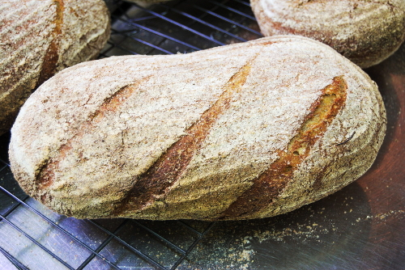
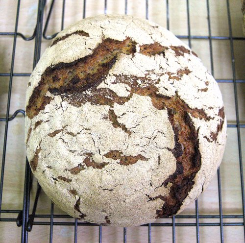
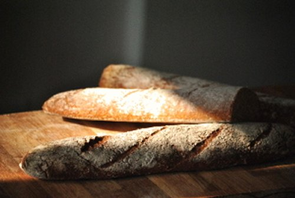
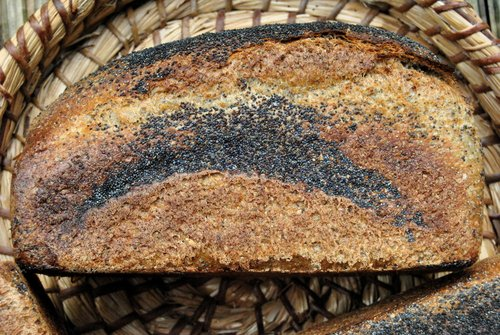
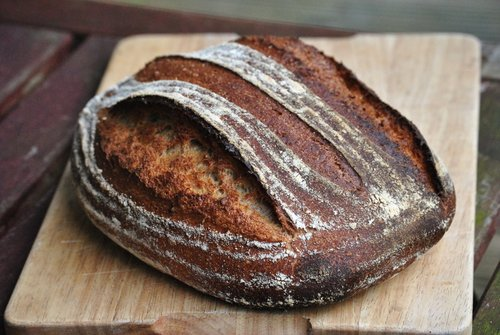
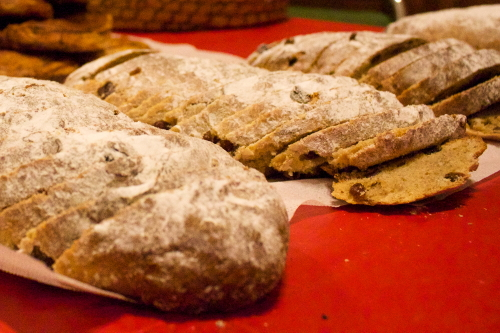
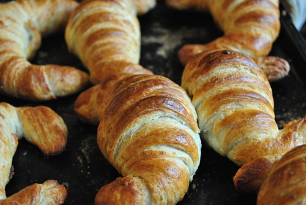
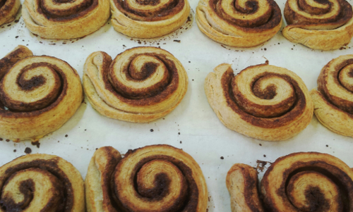

Sourdough and Long fermentation
Sourdough is a symbiotic ferment made of flour and water, in which can be found different naturally occuring bacteria and yeasts. It has been used long before 'bakers' yeast' to rise breads. It gives sourdough bread its distinct flavour, impressive keeping qualities, and research has recently pointed out that it could play an important role in making the grain more digestible to our bellies.
Ingredients
Bread is, or should be, simple when it comes to the ingredients we use. Our bread are made using a basic mix of flour, water and salt. We add herbs, seeds, grains, nuts, dairy and oils to create variations.
We source our ingredients here:
- Flours: Greencity, Shipton Mill, Gilchester's organic, Mungoswells malt and milling
- Spices, Seeds and Nuts: Greencity
- Dairy: Graham's the family dairy
Our Breads
Please note that those breads are not all available at the same time, get in touch to know what's on this month! ingredients marked with a * are potential allergens, so watch out!
Daily Breads
- Pain de East Lothian
Previously 'Campagne', it has undergone a slight transformation, now made entirely from Scottish grown and milled flour, aye! That's right pal.
ingredients: mungoswells white wheat* flour, mungoswells wholemeal flour, water sea salt
- Bohemian Loaf
Caraway, rye*, and wheat*, a Czech specialty, bring out the gherkins!
ingredients: dark rye* flour, white wheat* flour, water, sea salt, caraway seeds
- Baguette
A cracking crust, followed by a soft and aerated crumb, miam!
ingredients: white wheat* flour, wholemeal wheat* flour, water, sea salt, yeast*
- Poppy Loaf
Bloomer style sourdough, with 20% spelt*, poppy seeds, and sunflower seeds, don't put into the toaster unless you have enough for everybody!
ingredients: white wheat* flour, wholemeal wheat* flour, wholemeal spelt* flour, poppy seeds, sunflower seeds, water, sea salt
- Gwiniz du
Breton style 'Black wheat*' loaf, with 15% wholemeal buckwheat* flour
ingredients: white wheat* flour, wholemeal wheat* flour, wholemeal buckwheat* flour, water, sea salt
 Buttery Rolls
Buttery Rolls
Sorry, it's all in the name!
ingredients: white wheat* flour, wholemeal wheat* flour, water, milk*, butter*, sea salt, yeast*, egg*
Festive Breads
- Stollen
German festive specialty, sweet loaf with a homemade marzipan filling
ingredients: white wheat* flour, wholemeal wheat* flour, water, raisins, home made marzipan* (ground almonds*, egg*, sugar), butter*, sea salt, yeast*
photo by Rosi Koll
 Brioche
Brioche
French recipe, bread was alright as it was, but hey, let's add butter* and egg* and see what happens!
ingredients: white wheat* flour, wholemeal wheat* flour, water, egg*s, butter*, sea salt, yeast*
Pastries
- Croissant
Flaky, rich, with real butter*!
ingredients: white wheat* flour, wholemeal wheat* flour, milk*, butter*, sea salt, yeast*, egg*
- Cinnamon Swirls
"I wanna live with a cinnamon swirl"
ingredients: white wheat* flour, wholemeal wheat* flour, milk*, butter*, sea salt, cinnamon, yeast*, egg*